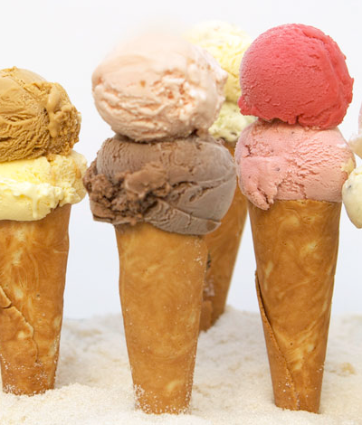
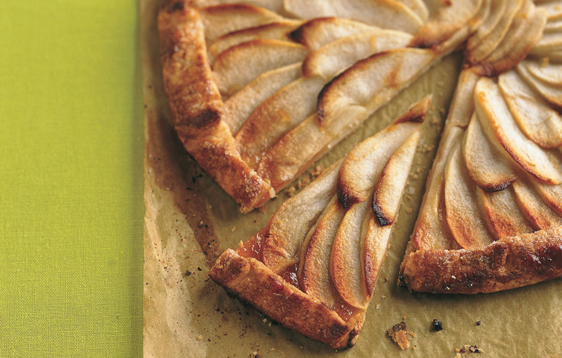
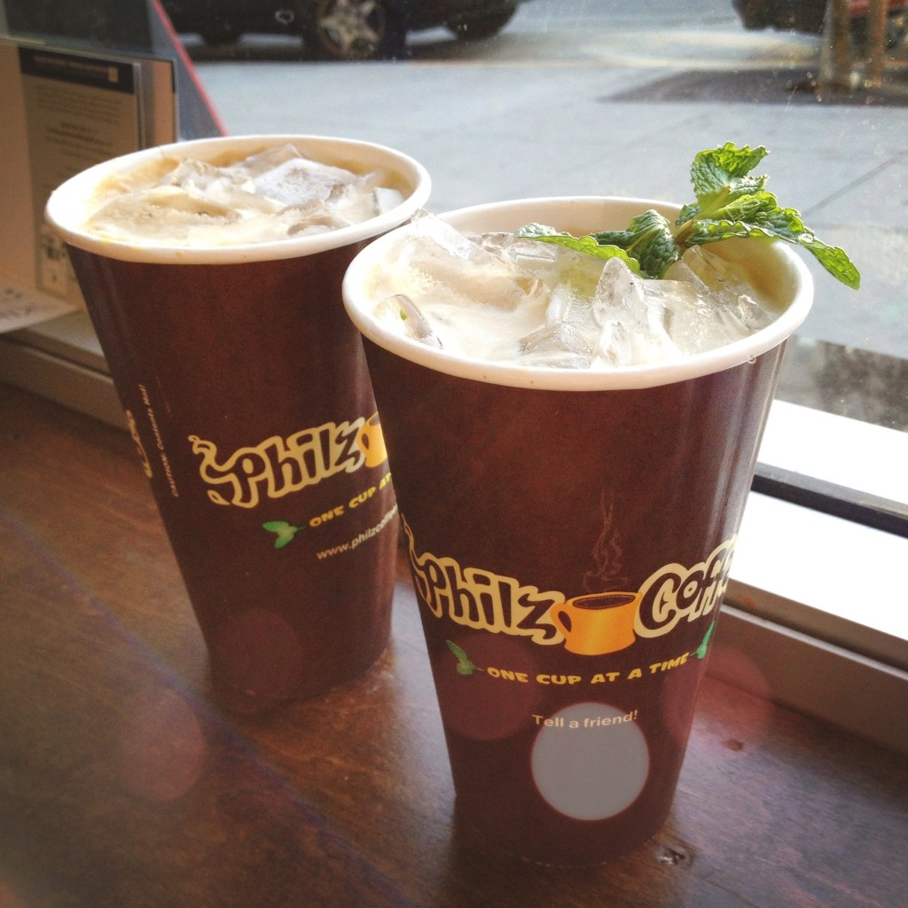
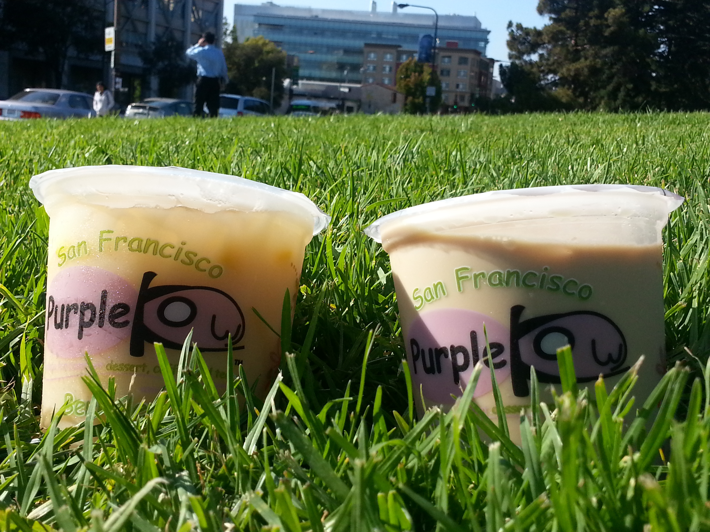
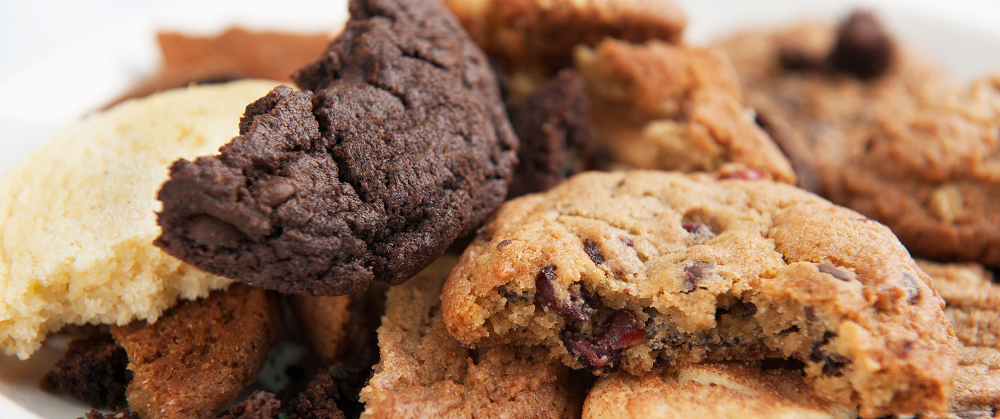
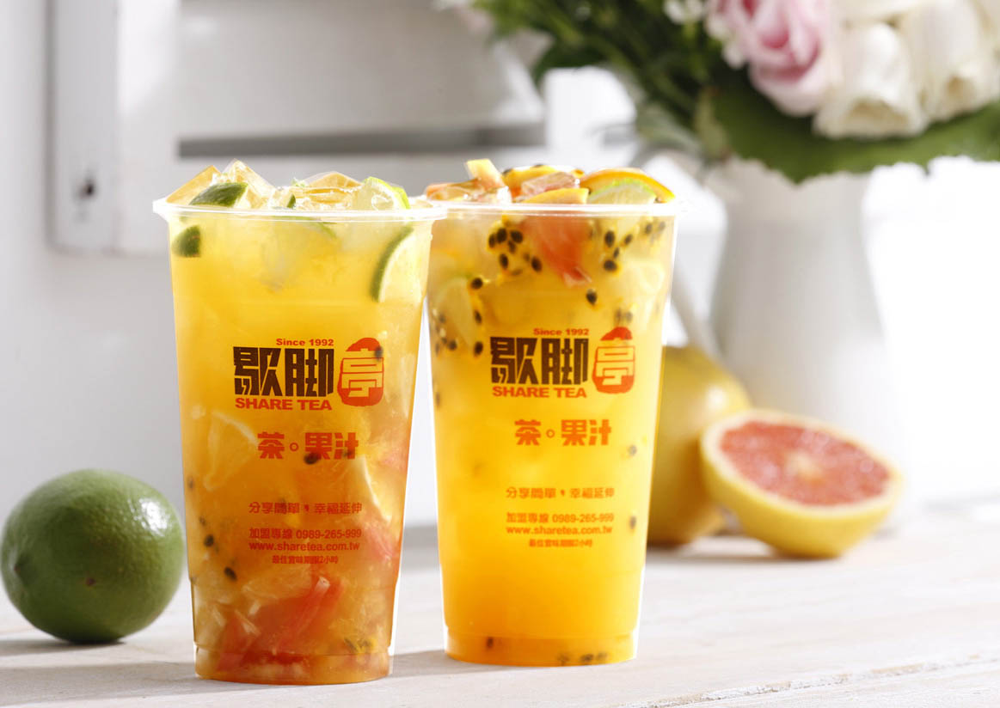
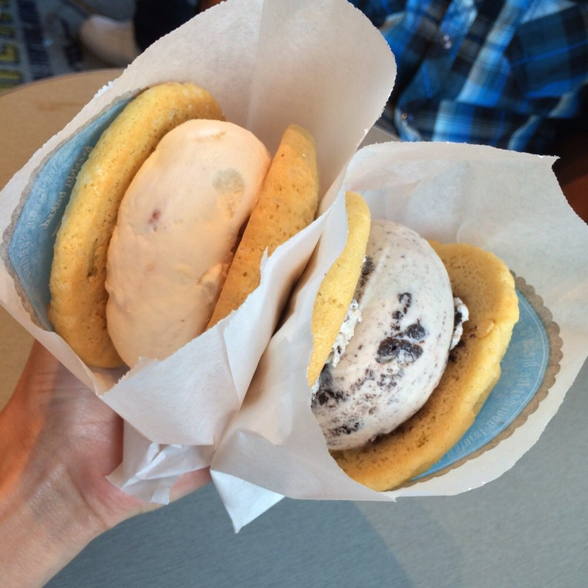
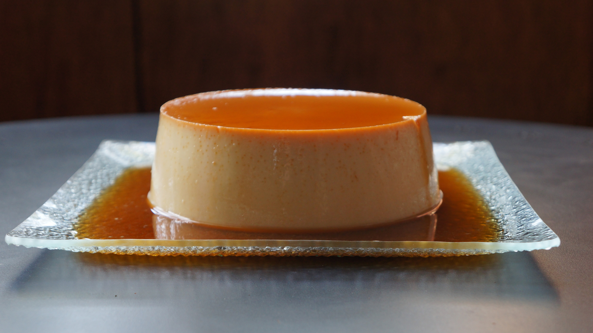

Ici
Fun place to visit because the store has different flavors each day! The staff is incredibly nice and lets you try as many flavors as you want (as long as it’s not too busy). I’ve been going here since high school and I still love it. My favorite flavors include: earl grey, orange chocolate chip, and mint toffee chocolate chip.
TIP: Ici’s baked alaskas, ice cream sandwiches, and mini bombes are also very tasty!
Fun place to visit because the store has different flavors each day! The staff is incredibly nice and lets you try as many flavors as you want (as long as it’s not too busy). I’ve been going here since high school and I still love it. My favorite flavors include: earl grey, orange chocolate chip, and mint toffee chocolate chip.
TIP: Ici’s baked alaskas, ice cream sandwiches, and mini bombes are also very tasty!

La Mediterranee
Try the baklava here, you will not regret it. The baklava comes with a light whipped cream that is just heavenly. Another plus? The other desserts are really amazing as well so make sure you come with friends.
TIP: The middle eastern plate is really filling and delicious and has a variety of foods.
Try the baklava here, you will not regret it. The baklava comes with a light whipped cream that is just heavenly. Another plus? The other desserts are really amazing as well so make sure you come with friends.
TIP: The middle eastern plate is really filling and delicious and has a variety of foods.

Summer Ktichen
This store has the best cupcake I’ve ever had: cream cheese frosting on a chocolate cupcake. The cupcake is so moist and the frosting is so tasty that I’m tempted to always buy a cupcake whenever I’m on College. The little chocolate balls on the top of the cupcake are always fun to chew on too!
TIP: The crispy chicken sandwich is amazing here.
This store has the best cupcake I’ve ever had: cream cheese frosting on a chocolate cupcake. The cupcake is so moist and the frosting is so tasty that I’m tempted to always buy a cupcake whenever I’m on College. The little chocolate balls on the top of the cupcake are always fun to chew on too!
TIP: The crispy chicken sandwich is amazing here.

Chez Panisse
Fruit galette. Need I say more? It’s Chez Panisse!
TIP: Their cafe upstairs is a lot easier to get a reservation at and cheaper.
Fruit galette. Need I say more? It’s Chez Panisse!
TIP: Their cafe upstairs is a lot easier to get a reservation at and cheaper.

Philz Coffee
I always get the ecstatic ice coffee extra sweet and creamy. The baristas are very friendly and will always make sure each customer has his drink the way he wants it to be.
TIP: Get an alfajore!
I always get the ecstatic ice coffee extra sweet and creamy. The baristas are very friendly and will always make sure each customer has his drink the way he wants it to be.
TIP: Get an alfajore!

Purple Kow
D3: iced milk drink with caramel, boba, and pudding. I love sweet stuff and this is the ultimate sweet dessert for me.
TIP: Share the drink with a friend!
D3: iced milk drink with caramel, boba, and pudding. I love sweet stuff and this is the ultimate sweet dessert for me.
TIP: Share the drink with a friend!

Pacific Cookie Company
This store has a very friendly staff and if you follow its instagram, the store gives out free cookies everyday! You just have to see the word of the day on instagram and they’ll give you a free cookie. Also if you check in on yelp, it’s bogo! Favorite flavors include: Dr. Midnight, mint condition, and snickerdoodle!
TIP: They run out of cookies usually in the afternoon, but they’ll make a second batch so just come back later.
This store has a very friendly staff and if you follow its instagram, the store gives out free cookies everyday! You just have to see the word of the day on instagram and they’ll give you a free cookie. Also if you check in on yelp, it’s bogo! Favorite flavors include: Dr. Midnight, mint condition, and snickerdoodle!
TIP: They run out of cookies usually in the afternoon, but they’ll make a second batch so just come back later.

Sharetea
I always get the mango green milk tea with pudding. I love how sweet this drink is and really, anything with mango in it is an automatic plus for me.
TIP: You can order online so when you get to the store you won’t have to wait in line.
I always get the mango green milk tea with pudding. I love how sweet this drink is and really, anything with mango in it is an automatic plus for me.
TIP: You can order online so when you get to the store you won’t have to wait in line.

Cream
$2.00 for 2 cookies and ice cream? Best deal ever. Aside from its lines, cream is an affordable dessert. Its ice cream is just good regular ice cream and I come here when Ici is too far of a trek.
TIP: The store can have very long lines, especially at night.
$2.00 for 2 cookies and ice cream? Best deal ever. Aside from its lines, cream is an affordable dessert. Its ice cream is just good regular ice cream and I come here when Ici is too far of a trek.
TIP: The store can have very long lines, especially at night.

Casa de Chocolates
Best flan ever! It’s so sweet and soft and it just makes me want to keep on eating it. Also, the store’s cold Mexican hot chocolate is very good and has a spicy kick to it.
TIP: The flan is super popular so make sure you get there early.
Best flan ever! It’s so sweet and soft and it just makes me want to keep on eating it. Also, the store’s cold Mexican hot chocolate is very good and has a spicy kick to it.
TIP: The flan is super popular so make sure you get there early.